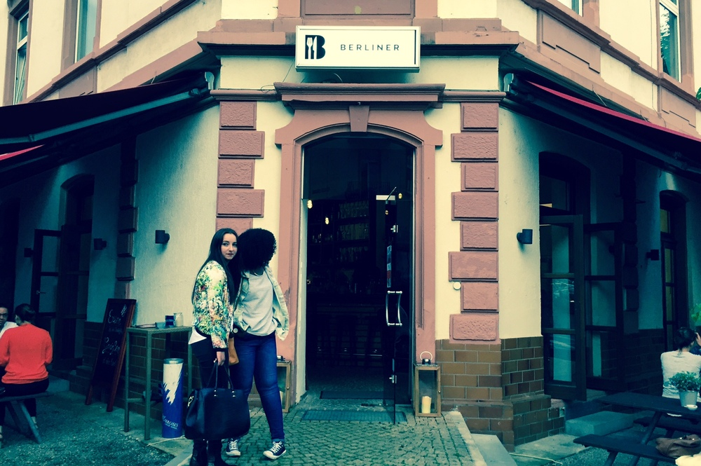
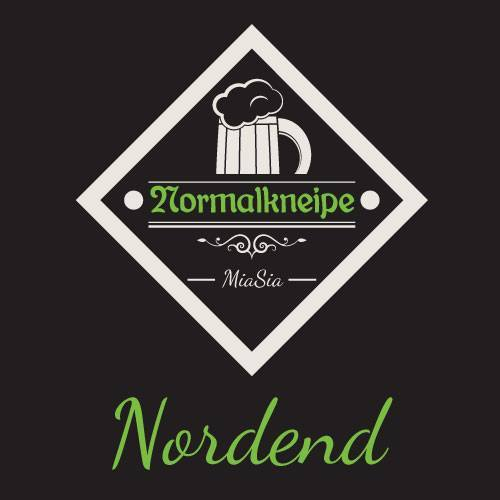
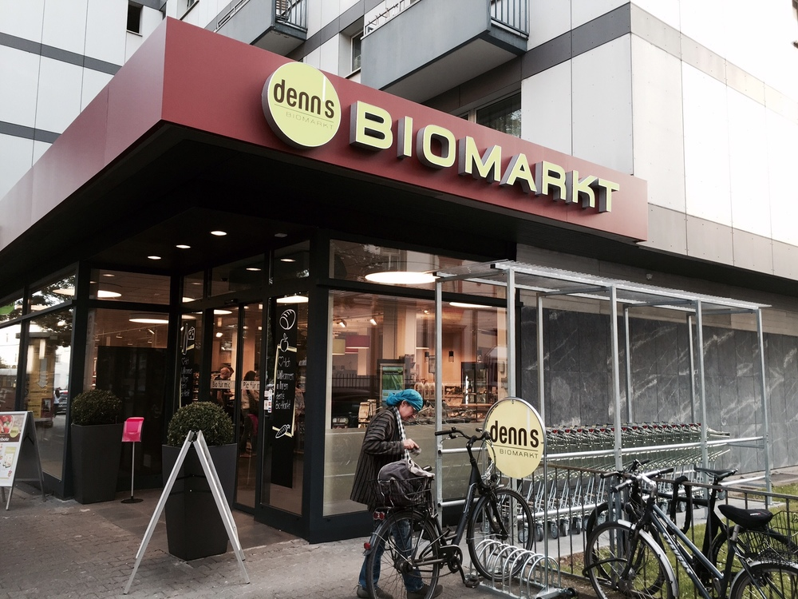

Was gibt's neues auf dem Latte-Macchiato-Strich der hessischen Hauptstadt der Herzen?
Soll ja niemand behaupten, es würde langweilig im Frankfurter Nordend. Außer einer ärgerlichen und langwierigen Streckensperrung der Linie U5 aufgrund von Umbauarbeiten auf der Eckenheimer Landstraße gibt es aber auch noch anderes zu berichten - im Positiven wie Negativen. Was also gibt's neues auf dem Latte-Macchiato-Strich der hessischen Hauptstadt der Herzen?
Alten Wein in neuen Schläuchen... pardon: Räumlichkeiten, gibts an gleich zwei Orten in unmittelbarer Nähe voneinander. So gibt es einen Umzug sowie die Eröffnung einer Dependance einer bereits existierenden Kneipe zu vermelden. Beides habe ich natürlich mal auf ein Kaltgetränk besucht - der Weg nach Hause ist schließlich nicht weit, höhö...
Die "Berliner" war lange Zeit bekannter wie beliebter Treff für Musik & gute Drinks ganz mitten in der Stadt. Auch ich war oft und gern dort, auch wenn ich ansonsten die Innenstadt meide wie der Teufel das Weihwasser. Allein des großen Spiegels an der Decke (!) wegen. Wo gibt's schließlich sonst sowas in Frankfurt? Leider musste die Berliner Bar vor einigen Monaten dann an ihrem alten Standort schließen. Grund hierfür war wohl ein nicht verlängerter Mietvertrag (wie immer halt).
Unter altem Namen (und nicht folgerichtig als "Weber-Bar", klingt ja auch irgendwie doof...) eröffnete diese letzten Mittwoch in der Weberstraße in den Räumlichkeiten des ehemaligen "Café Mola". Dessen Stammhaus am Südbahnhof besuche ich zwar ziemlich gern, jedoch fand ich dessen Ableger im Nordend immer recht furchtbar.
Nicht verzagt, Besuch gewagt: Zu meiner großen Freude sehe ich beim Bar-Personal ausschließlich bekannte Gesichter. Leider ist vom Flair der "alten" Bar kaum mehr etwas übrig. Wesentlich nüchterner das Interierur (scheint man größtenteils vom "Mola" übernommen zu haben), und auch mein geliebter Spiegel an der Decke ist Geschichte.
Preislich hat man sich dann auch direkt dem Nordend angepasst - 'ne Flasche Bier für 4 Euro, hey, muss nicht sein. Und so lecker wie bekömmlich der Martini auch sein mag - puh, 9 Euro, muss nicht sein. Frankfurt hin, Frankfurt her.
Dennoch wünsche ich Jonas und seinem herzlich lieben Team allen Erfolg dieser Welt beim Versuch, die "Berliner Bar" an neuer Stelle zu rehabilitieren - und rate jedem zu einem Besuch!

Meine liebe "hallofrankfurt"-Kollegin brachte mich einst auf die "Normalkneipe", welche sich bislang ausschließlich im Gallusviertel befand. Das Konzept der Kneipe ist schnell erklärt:
Normale Menschen, normale Getränke, normale Musik, normale Preise.
Und hey, das gefiel mir von Anfang an - und ich schreckte nicht einmal vor einer Reise ins "entfernte" Gallus zurück. für Auch ich vermisse schließlich "ganz normale Kneipen" mit Stammplatz am Tresen für Feierabendbier und Buch. Hier im Nordend blieb mir da bislang nur das "Feinstaub", welches ja irgendwie auch doch recht speziell ist und auch kaum zum "Draußen sitzen" geeignet ist.
Ich dachte an einen Aprilscherz, als ich über die Eröffnung eines Ablegers der "Normalkneipe" in unmittelbarer Nachbarschaft erfuhr. Auch für den schmalen Geldbeutel gibts hier eine dem Namen entsprechende "ganz normale" Kneipe mitsamt der Gastfreundschaft der griechischen Betreiber sowie stets nette Nachbarn am Tresen. Draußen sitzen kann man auch, der Bier-Gourmet kann sich an diversen Craft-Sorten erfreuen, die hier kalt stehen und auf durstige Nordend-Kehlen warten.
Geraucht werden darf zu meiner großen Freude ebenfalls - und dies ist dort auch derzeit dringend erforderlich, riecht es in den Räumlichkeiten doch noch sehr nach "nagelneu". Inklusive frisch gewachstem Duft der neu errichteten, ansehnlichen Theke.
Ein wenig verbesserungsbedürftig leider die Musik:
Nein, ich stehe nicht wirklich auf Radio-Gedudel, ein wenig individueller (und auch lauter) darf's dann gerne sein. Sonst gibt's aber absolut nix zu meckern, ergo mein Fazit:
Ein Hauch von Normalität fernab des Nordend-Lifestyles, in dem jeder noch "normal" sein kann: Jawollja, ich komme künftig gern hier hin!

Es ist so traurig wie exemplarisch:
Seit ich an der Friedberger Landstraße wohne, war der gute alte "Ghetto-Netto" in der Friedberger Landstraße 73 mein Stamm-Supermarkt. Bereits nach zwei Wochen des regelmäßigen dortigen EInkaufs kannte man das gesamte Personal inklusive Filialleiter, traf stets bekannte Gesichter in der immer zu langen Schlange an der Kasse.
Und waren alle Einkäufe verstaut, fragte die Kassiererin noch nett: "Noch eine große Schachtel Zigaretten dazu, wie immer?". Auch blieb stets Zeit für ein wenig Smalltalk mit Personal und Nachbarschaft.
Tja. all dies ist nun Geschichte:
Im Februar räumte der "Netto" nämlich endgültig die Regale leer. Grund hierfür: Gebäude wird saniert. Miete erhöht, der BWL'er bei Netto sagt: Lohnt nicht mehr.
Lohnen scheint sich die Miete allerdings für "Denn's Bio-Supermarkt". Dieser eröffnete nun in frisch sanierten Räumlichkeiten am 02. Juni seine Türen für hippe Nordend-Mutties und Sojamilch-schlürfende Biopäpste.
Darauf hat die Welt gewartet! Für viele der Menschen in der Nähe ist ein Einkauf im Bio-Tempel eben nicht finanzierbar. Aber nach dem "Durchschnitts-Frankfurter" fragt wohl eh schon längst niemand mehr.
Statt Klatsch & Tratsch gibt's dann eben nun Tofu und Sojaschnitzel. Schade drum.


Ersten Kommentar schreiben